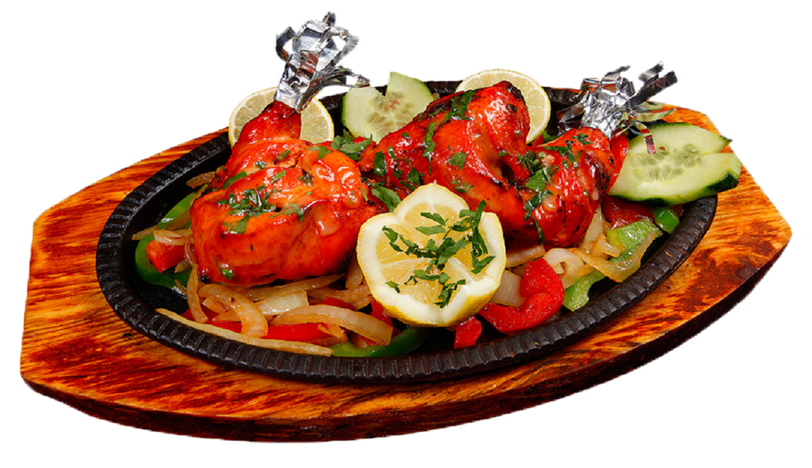

Патагония - это...
Что такое Патагония? Конечно, множество рек и ручьев, конечно, уникальные скалы и
пещеры, конечно, степи и ветра, но прежде всего Патагония — это другая жизнь. Именно здесь живут предки
коренного населения Чили — мапу че, что в переводе с языка мапудунгун означает «люди земли».
Круиз к ледникам
Вас ожидает круиз на корабле по фьордам, к ледникам Серрано и Балмаседа
(Balmaceda and Serrano glaciers). Во время этого водного путешествия Вы увидите бакланов и
дельфинов, проплывете по заливу, окруженному уникальными ландшафтами. Максимально близко
приблизитесь
к снежным глыбам ледника Серрано, ощутите величие здешних льдов.
Красивейшие парки
Познакомимся с одним из самых красивых парков в мире. Это, конечно
Торрес-дель –Пайне заветное место на карте любого путешественника, но добераются сюда лишь единицы.
Проедем через парк с видами на пики Пайне Гранде и его снежные вершины, а также Лос Сиернос —
известная гора с черными гранитными роговидными пиками.
Аргентинская кухня

Единственная пряность - перец
Анализируя характерные особенности аргентинской кухни,
следует отдельно выделить наиболее значимые ее характеристики. Овощи присутствуют здесь на столах круглый
год в огромном количестве — как в «натуральном» виде, так и в составе сложных блюд. Наиболее популярны
томаты, картофель, тыква и кукуруза. Говядина и телятина — одна из визитных карточек страны. До
девятнадцатого века говядину обычно жарили на горячих камнях, а позже начали запекать, коптить и тушить с
овощами. В аргентинских блюдах практически полностью отсутствуют пряности. По мнению местных кулинаров,
они способны только испортить вкус блюда. Единственная приправа, для которой здесь соизволили сделать
исключение — это перец. Аргентина — настоящий рай для вегетарианцев, поскольку те, кто отказывается от
употребления мяса, смогут найти в меню местных ресторанов огромное количество блюд из овощей и фруктов.